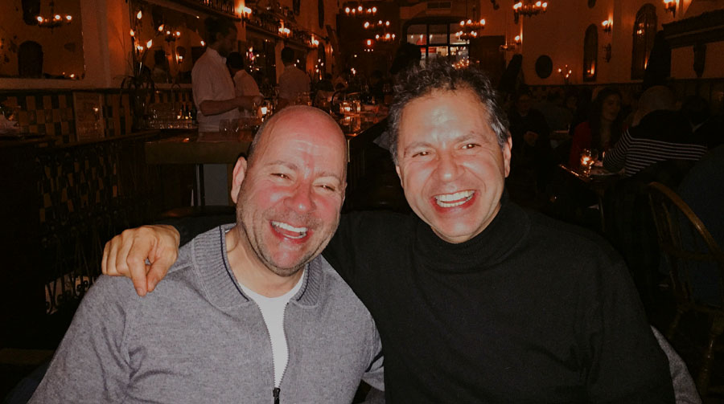

Les frères Herbert et Jean Madar n'avaient pas pour objectif de créer une entreprise. Ils ont décidé de partager quelque chose d'extraordinaire qu'ils avaient aimé toute leur vie.
"La poutargue n'est pas qu'un produit parmi tant d'autres, c'est tout ce que nous faisons."
— Herbert et Jean Madar, Frères Poutargue
L'histoire commence avec Roger Madar — père d'Herbert et Jean — qui possédait Comosa, une entreprise de pêche et de conserverie de sardines sur la côte atlantique de Safi, au Maroc, dans les années 1950.
Roger était un homme de mer et de tradition. Parmi les captures qui transitaient par son usine, les œufs de mulet gris occupaient une place particulière. Il savait comment le guérir à l'ancienne : le sel, la patience et le temps.
Lorsque la famille Madar a émigré au Canada au milieu des années 1960, Roger a apporté le métier avec lui.
Le parcours de la famille Madar s'étend sur trois générations, deux continents et une passion singulière : les meilleurs œufs de mulet salés au monde.
Découvrez leur sélectionRoger était propriétaire de Comosa, une entreprise de pêche et de mise en conserve de sardines sur la côte atlantique. Il est devenu un expert dans le traitement des œufs de mulet gris, un savoir-faire transmis de génération en génération par les communautés de pêcheurs méditerranéennes.
La famille Madar a immigré à Montréal. Roger a commencé à s'approvisionner en mulet gris frais au marché aux poissons Waldman's à Saint-Laurent et a continué à fabriquer de la poutargue à la maison en utilisant la même méthode traditionnelle qu'il avait apportée du Maroc.
La poutargue est devenue une tradition hebdomadaire du vendredi soir dans la maison Madar : tranchée finement, servie à l'apéritif avant le dîner, accompagnée d'Arak ou d'un verre de scotch. Herbert et Jean ont grandi avec ce goût. Cela fait désormais partie de qui ils sont.
Herbert et Jean Madar ont décidé d'apporter de fantastiques poutargues du monde entier aux amateurs existants et de faire découvrir aux consommateurs nord-américains cet ancien délice culinaire. Ils s'approvisionnent uniquement auprès de producteurs de classe mondiale. Ils ne proposent qu'un seul produit. Ils le font bien.
Pendant trop longtemps, les Nord-Américains ont eu peu ou pas accès à la poutargue de qualité supérieure. Nous nous approvisionnons directement auprès des meilleurs producteurs mondiaux de Sardaigne, de France, de Grèce, du Brésil et d'Égypte.
Pour ceux qui connaissent et aiment la poutargue – la diaspora méditerranéenne, les cuisiniers aventureux, les amateurs de gastronomie – nous voulons être la source la plus fiable et la plus complète du pays.
La plupart des Nord-Américains n’ont jamais goûté la poutargue, mais elle est pourtant appréciée en Europe et au-delà depuis 3 000 ans. Nous sommes ici pour changer cela.
Bottarga Brothers n'est pas un magasin d'alimentation spécialisé qui propose de la poutargue. Nous sommes le destination poutargue — entièrement concentrée, entièrement engagée.
Nous sélectionnons des sélections de poutargue haut de gamme provenant des principaux producteurs mondiaux sous notre Poutargue suprême™ marque. Chaque lobe, chaque sachet d'œufs râpés, sélectionnés avec le discernement de ceux qui ont grandi en mangeant la meilleure poutargue du monde.
Nous ne sommes pas des généralistes. Nous sommes obsessionnels. Et nous pensons que vous goûterez la différence.
Pas une seule critique négative. Jamais.
Sardaigne, France, Grèce, Brésil, Egypte.
Chaque décision que nous prenons concerne la poutargue.
États-Unis, Canada et monde entier. USPS gratuit aux États-Unis.
De la table de la famille Madar à Safi, au Maroc, à la vôtre. Livraison USPS gratuite sur toutes les commandes aux États-Unis.
Achetez la poutargue suprême™